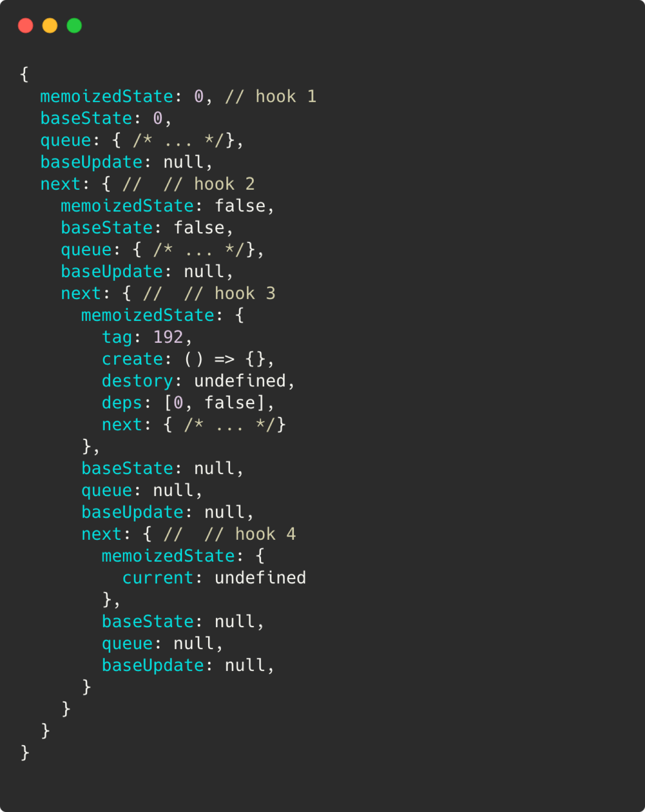

JSDC 是著名的 JS 開發者年會，這次非常榮幸能夠受邀為講者，分享 React Hooks 底層運作。
之前在公司有做過零星幾個分享，這次對外大眾演講倒是第一次，其實心中非常忐忑緊張，還好身邊有很多朋友聽我試講，感恩各位大大。
以此篇紀錄演講內容。
自己的工具自己造，咱們來 React Hooks
這次的演講主題同標題，主要想要向大家分享 React hooks 的底層運作。這次挑了 useEffect 及 useState 兩個 hooks 作討論。
沒有 Hooks 的世界長什麼樣子呢
Hooks 是 React 16.8 釋出的新功能，在 Hooks 尚未釋出以前，在實作 component (以下皆會用「元件」來稱呼) 會是以 class（class component） 實作。class 是 Javascript 的語法糖，讓 Javascript 能夠更加物件導向。而 Hooks 的出現讓元件能夠以 function 實作 (functional component)，更加方便簡短。
試看以下程式碼：
1 | class Counter extends React.Component { |
這段程式碼是在實作一個按鈕，使用者每按一下，count 就會加一。畫面大概會長這樣：

在實作上，會需要一個 constructor function 來初始化 state，最後會有一個 render function 來把畫面呈現出來。
1 | this.setState({ count: this.state.count + 1}) |
是讓 count 改變的最主要的函式。
改成 hooks 版本後，程式碼如下：
1 | const Counter = () => { |
程式碼與 class 相比精簡相當多，setCount 這個 hook function 就能夠改變 state 的值。
那麼有了 hooks 後，除了程式碼精簡許多外，還有怎麼樣的優點呢？
Hooks 可以解決什麼問題？
共用邏輯可抽出做使用
hooks 基本上是 function，會繼承 function 的屬性。在寫程式的過程中，會盡量符合 「DRY」（ Don’t repeat yourself ）原則，會把重複性的程式邏輯抽出來共用，對 hooks 而言，可以抽出來做 custom hooks。
邏輯拆分更加清楚不混亂
假設一個情境：因為某些特殊狀況需要在同一個元件裡處理兩支 API，若是以 class component 實作，會需要在同個 lifecycle （ 通常為 componentDidmount ）裡處理這兩支 API，邏輯會相當混雜。
而 hooks 的出現，可以在同一個元件裡使用複數個相同的 hooks ( 通常為 useEffect )，可以讓這兩支 API 可以分開實作，邏輯更加清楚。
試看以下程式碼：
class component
1 | componentDidMount () { |
functional component
1 | useEffect(()=> { |
Hooks 的規則
不能在迴圈、條件式 、nested functions 裡使用 hooks
在 function 裡面的 function 就是 nested function，例如 callback function 即是一種。
原因為 react 在記錄元件的 hooks 的順序是依靠 fiber 實作，以 linked list 方式依在元件內呼叫順序儲存 hooks，而如果在剛剛提到的三個條件做使用，會使 react 在呼叫 hooks 的時候順序亂掉，以至於會呼叫到錯的 state。
fiber 廬山真面目大概長這樣子：
只會在 functional component 或是在 custom hooks 使用 hooks
custom hooks 即為元件間共用的 hooks function
可以想像 hooks 實作概念為操作 array 的過程
實作 useState
還記得前面 Counter 例子有出現以下這行嗎？
1 | const [count, setCount] = useState(0) |
useState 是很常使用到的 hook，本身是一個用來改變現在 state 狀態的 function，回傳值為陣列。陣列解構賦值後就能取得現在 state 的狀態及改變 state 的 function。
以下為以操作陣列為概念實作出的 useState 程式碼：
1 | React= { |
實作 useEffect
1 | useEffect(()=> callback, [dependencies]) |
useEffect 為處理 side effects 的 hooks function，會用到的場景通常為處理 API、訂閱、間聽事件。
關於 useEffect 的執行順序
決定是否要執行的條件：有無 dependencies。
| dependencies | useEffect 執行時機 |
|---|---|
| 無 | 每次 component render 後都會執行 |
| [ ] | 只會執行一次，往後的 render 不會執行 |
| 有 | 只有 dependencies 有變化才會執行 |
要特別注意執行順序是在元件 render 後。
以下為實作 useEffect 的程式碼：
1 | React = { |
Recap
這次會分享這個主題是拜公司讀書會所賜，當時對解構 hooks 底層實作非常有興趣，於是經過一番研究後，決定分享給更多人認識 hooks。
這次參加 JSDC 頗有收獲，認識了很多平常有在 follow 的大大們，非常開心。
此為演講 live coding 範例程式碼。